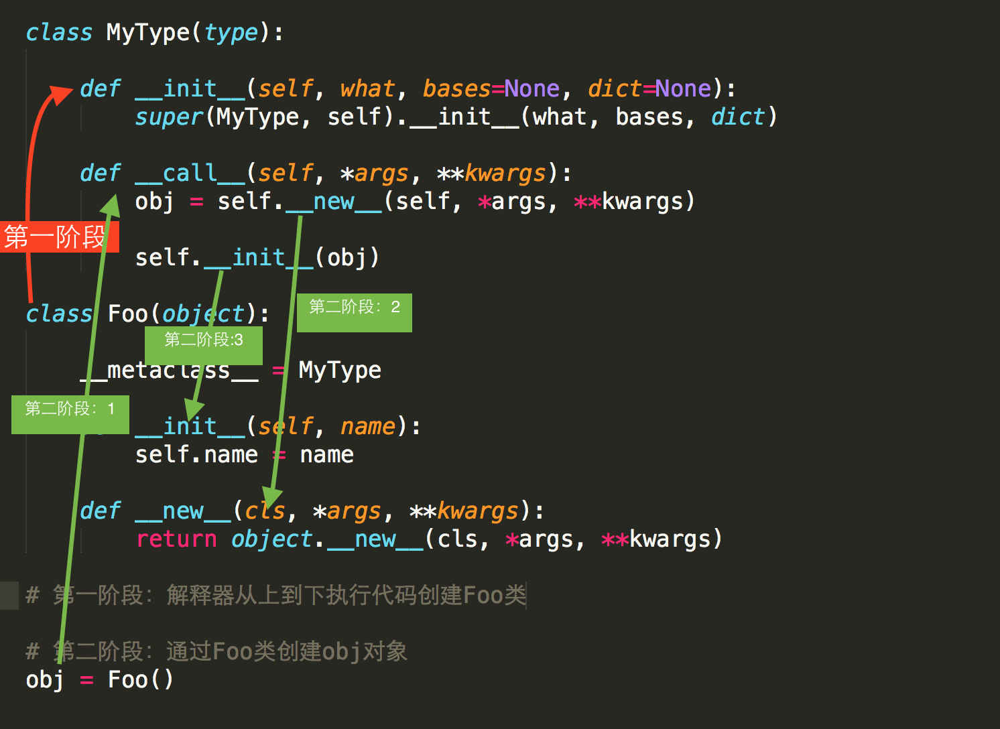

本篇记录一下Python类中的修饰和特殊方法,特殊成员
修饰
- '_'单下划线
单下划线 意味味着该方法或属性不应该去调用，不是不可以调用，依旧可以被子类继承，换句话来说，就是没有什么卵用
class fathclass(object):
name = 'njcx'
def __init__(self,age):
self.age=age
def _findx(self):
print '1111'
def __findx(self):
print '__findx'
class sonclass(fathclass):
def __init__(self):
pass
def __findx(self):
print '__findxson'
def _findx(self):
print '2222'
son=fathclass(13)
son._findx()
#输出 1111
son.__findx()
#报错
sun = sonclass()
sun.__findx()
#报错
sun._findx()
#输出2222
- '__'双下划线
双下划线，只有类内可见，不能被继承，不能被重写，和Java的private一样
class fathclass(object):
name = 'njcx'
def __init__(self,age):
self.age=age
def __findx(self):
print '__findx'
def method(self):
self.__findx()
class sonclass(fathclass):
def __init__(self):
pass
def __findx(self):
print '__findxson'
son=fathclass(13)
#son.__findx()
son.method()
#输出__findx
sun = sonclass()
sun.method()
#输出__findx
- '__xxx__' 特殊，由Python调用
特殊成员
- 1, __doc__
class Foo:
""" 描述类信息，这是用于看片的神奇 """
def func(self):
pass
print Foo.__doc__
- 2, __module__ 和 __class__
__module__ 表示当前操作的对象在那个模块
__class__ 表示当前操作的对象的类是什么
-
3, __init__ 和 __del__ 构造方法和析构方法
-
4， __call__ 对象后面加括号，触发执行，可以把对象当函数用
class Foo:
def __init__(self):
pass
def __call__(self, *args, **kwargs):
print '__call__'
obj = Foo() # 执行 __init__
obj() # 执行 __call__
- 5，__dict__
类或对象中的所有成员
class Province:
country = 'China'
def __init__(self, name, count):
self.name = name
self.count = count
def func(self, *args, **kwargs):
print 'func'
# 获取类的成员，即：静态字段、方法、
print Province.__dict__
# 输出：{'country': 'China', '__module__': '__main__', 'func': <function func at 0x10be30f50>, '__init__': <function __init__ at 0x10be30ed8>, '__doc__': None}
obj1 = Province('HeBei',10000)
print obj1.__dict__
# 获取 对象obj1 的成员
# 输出：{'count': 10000, 'name': 'HeBei'}
obj2 = Province('HeNan', 3888)
print obj2.__dict__
# 获取 对象obj1 的成员
# 输出：{'count': 3888, 'name': 'HeNan'}
- 6，__str__
如果一个类中定义了__str__方法，那么在打印 对象 时，默认输出该方法的返回值。
class Foo:
def __str__(self):
return 'njcx'
obj = Foo()
print obj
# 输出：njcx
- 7， __getitem__、__setitem__、__delitem__
用于索引操作，如字典。以上分别表示获取、设置、删除数据
#!/usr/bin/env python
# -*- coding:utf-8 -*-
class Foo(object):
def __getitem__(self, key):
print '__getitem__',key
def __setitem__(self, key, value):
print '__setitem__',key,value
def __delitem__(self, key):
print '__delitem__',key
obj = Foo()
result = obj['k1'] # 自动触发执行 __getitem__
obj['k2'] = 'wupeiqi' # 自动触发执行 __setitem__
del obj['k1'] # 自动触发执行 __delitem__
- 8, __getslice__、__setslice__、__delslice__
该三个方法用于分片操作，如：列表
#!/usr/bin/env python
# -*- coding:utf-8 -*-
class Foo(object):
def __getslice__(self, i, j):
print '__getslice__',i,j
def __setslice__(self, i, j, sequence):
print '__setslice__',i,j
def __delslice__(self, i, j):
print '__delslice__',i,j
obj = Foo()
obj[-1:1] # 自动触发执行 __getslice__
obj[0:1] = [11,22,33,44] # 自动触发执行 __setslice__
del obj[0:2] # 自动触发执行 __delslice__
- 9,__iter__
用于迭代器，之所以列表、字典、元组可以进行for循环，是因为类型内部定义了 iter
class Foo(object):
pass
obj = Foo()
for i in obj:
print i
# 报错：TypeError: 'Foo' object is not iterable
#!/usr/bin/env python
# -*- coding:utf-8 -*-
class Foo(object):
def __iter__(self):
pass
obj = Foo()
for i in obj:
print i
# 报错：TypeError: iter() returned non-iterator of type 'NoneType'
#!/usr/bin/env python
# -*- coding:utf-8 -*-
class Foo(object):
def __init__(self, sq):
self.sq = sq
def __iter__(self):
return iter(self.sq)
obj = Foo([11,22,33,44])
for i in obj:
print i
以上步骤可以看出，for循环迭代的其实是 iter([11,22,33,44]) ，所以执行流程可以变更为：
#!/usr/bin/env python
# -*- coding:utf-8 -*-
obj = iter([11,22,33,44])
for i in obj:
print i
#!/usr/bin/env python
# -*- coding:utf-8 -*-
obj = iter([11,22,33,44])
while True:
val = obj.next()
print val
- 10,__new__ 和 __metaclass__
Python 下面一切都是对象，也就是说类也是对象。
class Foo(object):
def __init__(self):
pass
obj = Foo()
Foo类对象是 type 类的一个实例，即：Foo类对象 是通过type类的构造方法创建。
def func(self):
print 'hello wupeiqi'
Foo = type('Foo',(object,), {'func': func})
#type第一个参数：类名
#type第二个参数：当前类的基类
#type第三个参数：类的成员
类默认是由 type 类实例化产生，type类中如何实现的创建类？类又是如何创建对象？类中有一个属性 metaclass，其用来表示该类由 谁 来实例化创建，所以，我们可以为 __metaclass__ 设置一个type类的派生类，从而查看 类 创建的过程。
